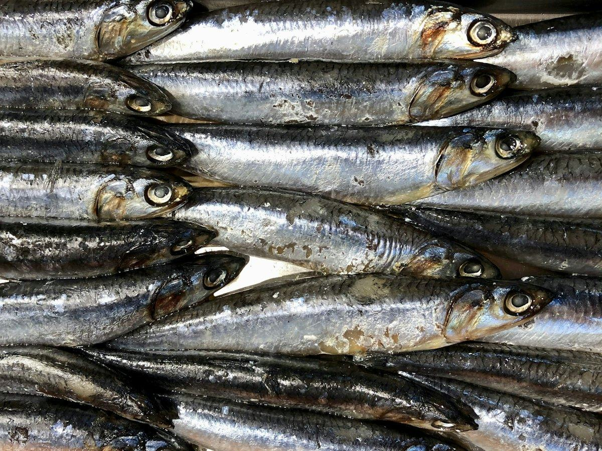
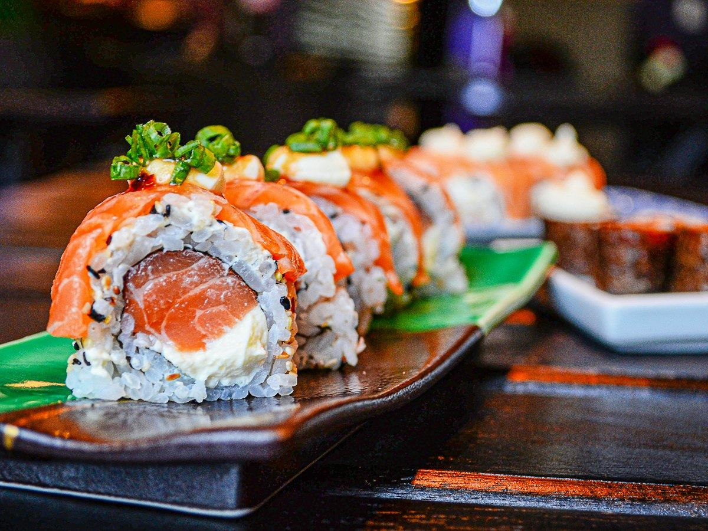
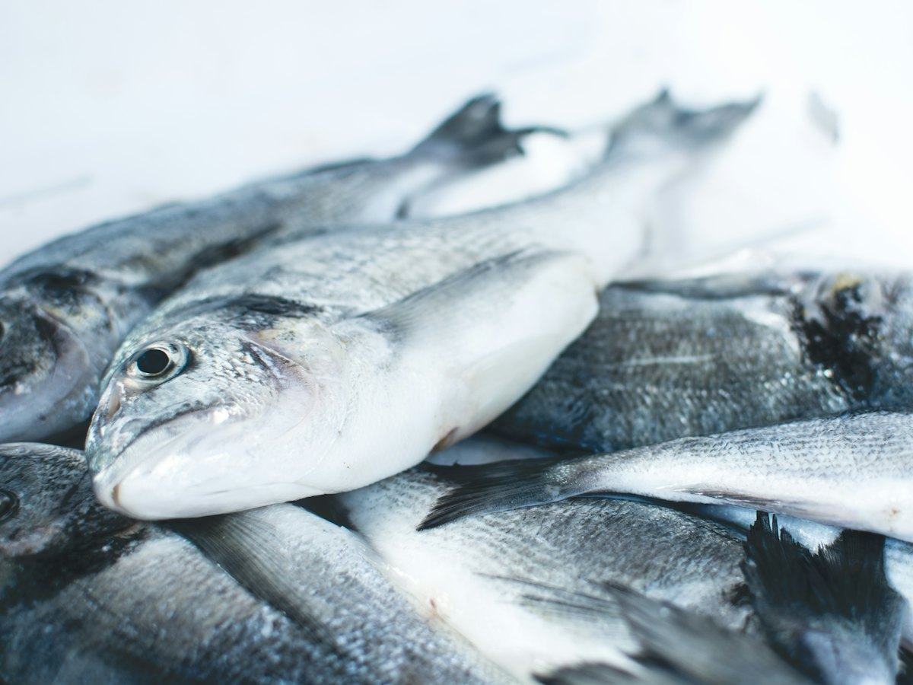

Recetas
3 recetas de salmón fáciles y saludables: al horno, en papillote y en ensalada
Salmón al horno con espárragos, en papillote con verduras y en ensalada con aguacate. Recetas fáciles con calorías, proteínas, hidratos y grasas por ración.
 Por el equipo editorial de Pombo AI
Por el equipo editorial de Pombo AI
12 nov 2026 · 5 min de lectura

El anisakis es un parásito que puede estar en el pescado. Se controla fácilmente si sabes qué platos necesitan congelación previa y cuáles no.
La AESAN indica que, cuando se preparan en casa, hay que congelar antes estos platos:
Si compras estos productos ya hechos, la congelación la ha hecho el fabricante.

Tu congelador debe llegar a -20 °C o menos y el pescado tiene que estar congelado al menos cinco días. Esa temperatura solo se alcanza en congeladores de tres estrellas (***) o más. Si el tuyo tiene menos, compra el pescado ya congelado.
En los boquerones en vinagre puedes congelar antes o después del marinado.
Si vas a cocinar el pescado frito, asado o guisado no necesitas congelarlo: a partir de 60 °C en el centro del pescado durante al menos un minuto, el anisakis se inactiva. Como orientación, una pieza de unos 2,5 cm de grosor necesita unos 10 minutos en total, dándole la vuelta a los 5.
Tampoco es necesario con ostras, mejillones, almejas, coquinas y demás moluscos bivalvos, según la AESAN.

Alergia al anisakis: algunas personas reaccionan incluso a las larvas muertas. Si te han diagnosticado alergia, sigue las indicaciones de tu alergólogo.
En casa, la recomendación es congelar a -20 °C o menos durante al menos 5 días. Esta temperatura solo se alcanza en congeladores de tres estrellas o más.
No. Si el pescado alcanza 60 °C en el centro durante al menos un minuto, el anisakis se inactiva.
Solo si el pescado se ha congelado antes correctamente. El vinagre no mata el parásito.
Aviso: Este artículo es informativo y no sustituye el consejo de un médico o dietista-nutricionista. Si tienes una enfermedad, tomas medicación, estás embarazada o has tenido un trastorno de la conducta alimentaria, consulta con un profesional antes de cambiar tu alimentación.
Salmón al horno con espárragos, en papillote con verduras y en ensalada con aguacate. Recetas fáciles con calorías, proteínas, hidratos y grasas por ración.
Merluza a la gallega, al horno con pimientos y a la plancha con verduras. Tres recetas de pescado blanco con su información nutricional.
Ensalada de pasta integral con atún, tostada de atún y aguacate y tomates rellenos. Recetas fáciles con su información nutricional.